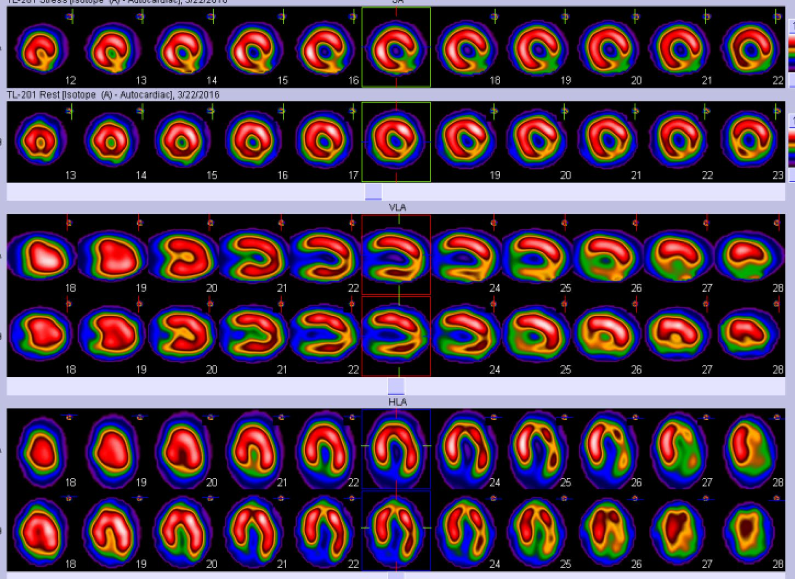
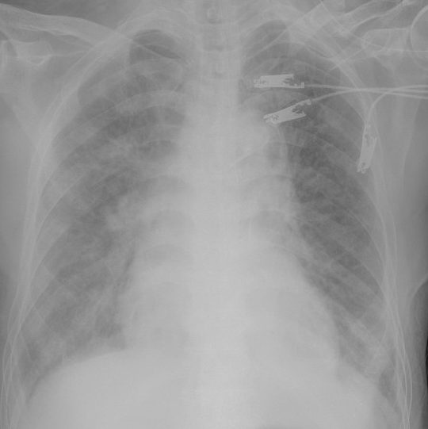
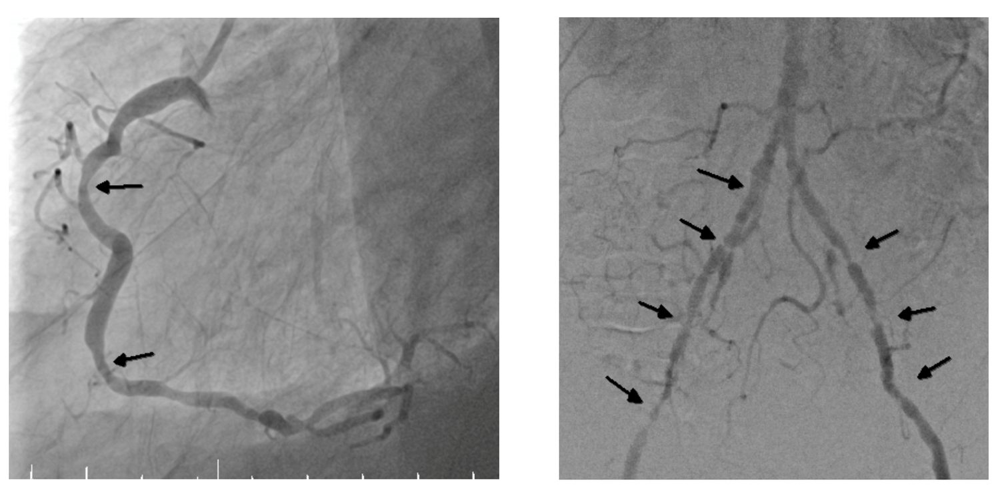
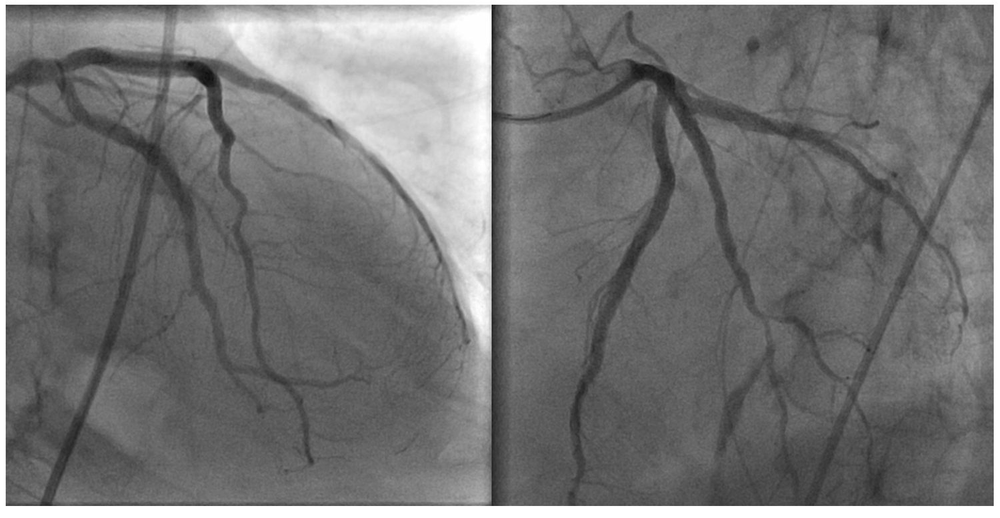
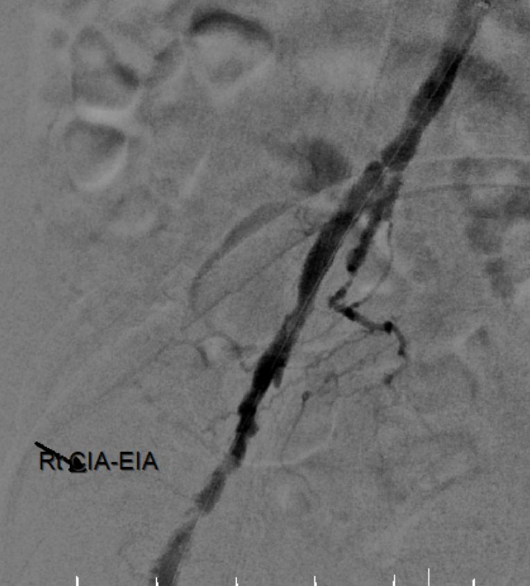
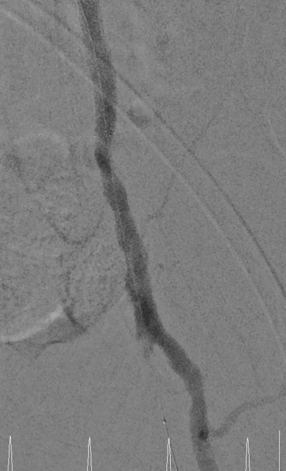
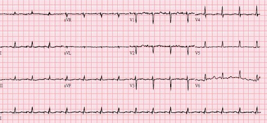
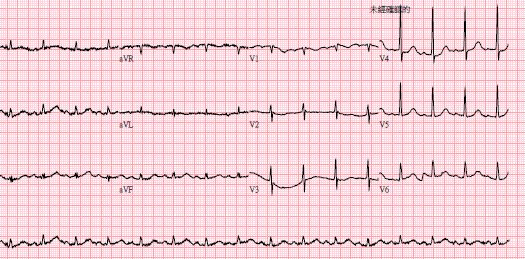

病家 × 團隊 × 時間壓力——從加護病房、導管室到跨院轉送，衝突如何發生，又如何被化解。
你有沒有過——跟病患、家屬，或團隊成員發生決策衝突，然後一整天情緒低落的經驗？
◍ 現場互動：請想一個最近的例子，我們待會回來對照。
定義、來源、層次
心因性休克連鎖決策
ECMO 與資源衝突
語言如何翻轉
DCS · SURE · 決策輔具
SPIKES · NURSE · VALUE
心理安全 · 臨床推理
不畏懼衝突，從中學習
決策衝突，是採取行動前的一種不確定狀態——當彼此競爭的選項，涉及風險、損失，或挑戰個人價值。
Decisional conflict — a state of uncertainty about the course of action to be taken.
當病人期待「共享決策」，實際卻由醫師單方主導，角色落差會讓病人感受到更大的決策衝突。
最常被談論，卻不是最多發生的一層。
跨專科、跨職級之間——本場的重點。
病情走向本身，就在拉扯每個決定。
加護病房工作人員，在一週內感受到至少一次衝突；其中最常見的是護理師—醫師之間。
323 間 ICU、24 國、逾 7,000 名醫護。衝突與高工作量、溝通不良、末期照護決策高度相關。
→ 諸多醫療決策衝突，其實更多發生在醫療團隊成員之間。



「我們一起決定」——說明有選擇、承諾支持、先問病人在意什麼。
比較選項的風險與益處，善用決策輔具與圖解。
引出並整合病人偏好，形成可執行的決定。
醫院推行 SDM 是有目的的：把「單方告知」變成「三段式協作」。

雙側下肢休息痛 → 急做超音波：急性肢體缺血 (ALI)。
冠脈修好了，腳卻缺血了——新的衝突正要引爆。
如果每個人都兩手一攤——
同一個病人，兩種結局。差別，往往在團隊怎麼對話。
24 小時待命心導管，但當天全院 ICU 滿床，連緊急加床額度（SICU/RCC 2 床）也用罄。
當日可執行夜間緊急心導管、有 ICU 床位；但病人需 ECMO＋升壓劑，跨院運送有風險。
(A) 轉竹北，外科/體循跟車，承擔運送風險 · (B) 留新竹，嘗試協調擠床（不一定可行）
意識 E1VTM1、瞳孔小、間歇肌肉抽搐，腦損傷程度未知。家屬當天即表示：若身體疾病無法處理，希望不要讓病人太辛苦，甚至想盡速撤除 ECMO。
依急診的評估與討論，預後尚無法釐清；當初正是為了「再給幾天機會」，才冒運送風險轉院。應再觀察幾天。
(A) 確認 DNR 後直接撤除 ECMO · (B) 轉達家屬想法，召開跨科部家庭會議再議
最大化整體效益、優先救可救者、程序透明一致、避免個別醫師獨自承擔配給抉擇。
以事先制定的評分與分診團隊 (triage committee) 做呼吸器/ICU 床位配給，讓床邊醫師不必獨自背負。
共同點：切割責任、否認關聯、階層壓抑發聲。（列＝發話者，欄＝對象；還原自原簡報對話表）
在類似情境下，你聽過最傷人的一句話是什麼？
◍ 這些話為什麼傷人？多半因為它切斷了連結，而不是解決問題。
共同點：承接、支援、發聲、分擔——把責任接起來，而不是推出去。
承接
支援
發聲
分擔
這不是天生的個性，而是可以設計的團隊文化——它有個名字：心理安全感。
當資深醫師主動鼓勵發聲，受訓者願意在術中 speak up 的比例，從 30% 升到 82%。
心理安全＝相信「說出疑慮、承認錯誤、提問，不會被羞辱或懲罰」。它是學習行為與病人安全的前提。
高堅持、低合作
高堅持、高合作（雙贏）
各退一步
低堅持、低合作
低堅持、高合作
看情境選用；危急當下也可能需清楚主導。
找出「卡住」的病人與家屬；追蹤衛教/決策輔具介入前後的變化。
我清楚各選項的利與弊嗎？
我了解可用的資訊嗎？
我清楚哪些利弊對我最重要嗎？
我有足夠的支持與建議來做選擇嗎？
四題皆「是」得 4 分；≤ 3 分即提示可能有決策衝突。
項隨機試驗的 Cochrane 統合分析：決策輔具 (decision aids) 能提升知識與風險認知，並降低決策衝突、減少「被動決定」。
不是多講幾句，而是給對的工具：圖表、選項比較、價值澄清。
安排隱私與在場者
先問「你了解多少？」
徵得告知的意願
預警後，簡明說明
以同理回應情緒
總結並定下計畫
VitalTalk 教材基礎；先接住情緒，資訊才進得去。
結構化引導：探詢病人對病情的理解、資訊偏好、目標、恐懼、可接受的取捨。
Value 家屬發言、Acknowledge 情緒、Listen、Understand 病人、Elicit 問題。主動式會議＋手冊降低家屬 PTSD/焦慮/憂鬱。
理性 vs 情緒 · 經濟條件 · 在家中的角色與地位 · 學歷與理解力 · 個性與自主性。
成員的知識斷層 · VS vs Resident vs NP · 專業技術 · 判斷與經驗 · 行政聯絡 · 四種性格。
從「認識決策衝突」，走到「理解自己團隊成員個性上的衝突」。
先界定好問題 · 多跟 seniors 討論 · 每天下午 debriefing。急重症的教學，要在成功救援後把握時間做；也別忘了照顧照顧者。
把臨床問題講清楚、講準確。
Clinical Reasoning——衝突常源於推理沒到位。
把診斷轉成可執行的治療計畫。
很多「決策衝突」，其實是「臨床推理不清」偽裝出來的。


與第 17 張的「48 小時 mortality」是同一個病人——差別在團隊選擇了承接而非切割。


「讀醫學而不讀書，如同航行於未知之海；但讀醫學而不看病人，則根本未曾出海。」
— William Osler
不畏懼衝突，友善溝通，團隊合作，從中學習。
整理／講者：謝慕揚 MD, PhD, FESC。本教材為讀書會共筆整理，僅供醫療專業人員教學參考；臨床影像取自本案例、已去識別化。文獻 DOI/PMID 均經 PubMed 查證。